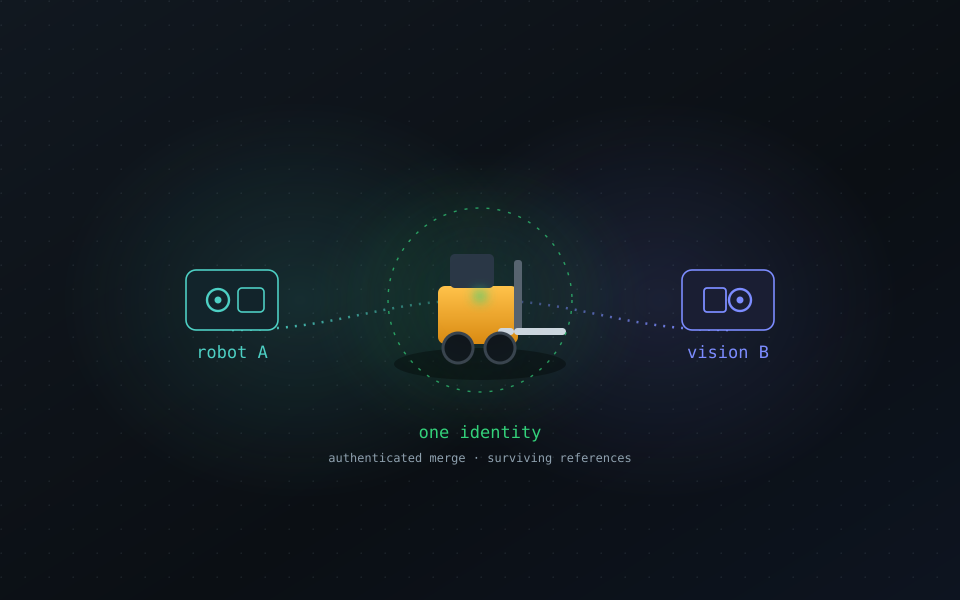

See identity work.
Four demos, one idea. Everything you see is a real minted 4D-ID running on the same in-browser resolver, in a sandbox that never touches the live namespace.

Two systems, one forklift
A robot and a vision system independently name the same forklift, then reconcile to one identity with provenance, confidence, an authenticated merge, and surviving references. The hard problem, solved cleanly.
Reconcile it →
Name the world
Type an address or drop geodata and watch it become named points on a satellite globe. Toggle the H3 grid to see why a cell is the address.
Open the globe →
A building that can be worked
A robot works the floors while a drone surveys. The drone hands an observation to the robot by name. Dispatch a repair to one sprinkler head.
Enter the building →One record, ten thousand containers
Sail a ship full of named containers and count the records. Naive publishing versus the hierarchy, live, with a ratio you will not forget.
Sail the ship →The globe uses CesiumJS with Esri World Imagery. The building and ship use three.js, vendored, no CDN. All three share 4did-lite.js, a faithful client-side build of the reference resolver.